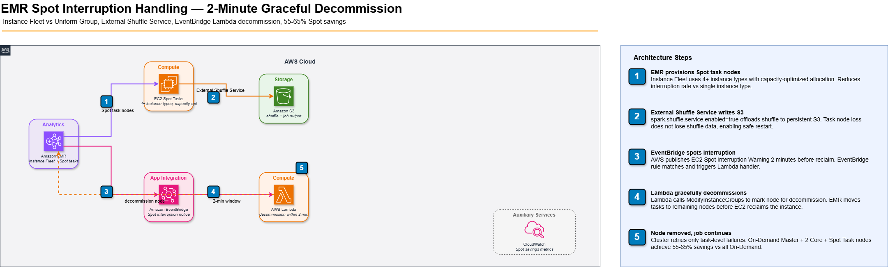

EMR Spot Instance Interruption Handling at Scale
The 4-hour Spark job that restarted from zero
We were running a daily data enrichment job on an EMR cluster with 80 Spot r5.4xlarge core nodes — saving 70% vs On-Demand. At hour 3.5 of a 4-hour job, a Spot capacity reclamation hit 23 nodes simultaneously. YARN decommissioned them. Spark rescheduled the tasks onto the remaining nodes. The problem: the shuffle data for stages 8 through 14 lived on the terminated nodes' local NVMe disks. Spark had to re-execute those entire stages from the last checkpoint. The job added 2 hours of execution time. We had the savings math right but the failure recovery math wrong.
The 2-minute window: what you can and cannot do
AWS sends a Spot interruption notice 2 minutes before termination via EC2 instance metadata and EventBridge. Two minutes is not enough time to complete meaningful work on a data engineering task. A Spark shuffle write for a 100GB partition takes 4–8 minutes. Checkpoint a DynamoDB watermark: 0.3 seconds. The correct response to an interruption notice is not "try to finish the task" — it is "signal YARN to decommission gracefully and let Spark's task retry mechanism handle it."
EC2 publishes interruption notice → EventBridge catches it (rule: EC2 Spot Instance Interruption Warning) → Lambda calls EMR API to decommission the node → YARN begins graceful decommission → tasks are rescheduled to healthy nodes → interrupted node stops accepting new tasks. The 2-minute window covers steps 1–3 (about 30 seconds total if automation is in place).
Instance fleet vs uniform instance group
The most important architectural decision for Spot EMR is choosing EMR Instance Fleets over Uniform Instance Groups. Instance Fleets let you specify up to 5 instance types per fleet, and EMR automatically fulfills capacity from whichever Spot pools have availability. Uniform instance groups lock you into one instance type per group — when that Spot pool is reclaimed, the entire group is terminated simultaneously.
resource "aws_emr_cluster" "data_processing" {
name = "daily-enrichment"
release_label = "emr-7.1.0"
applications = ["Spark", "Hadoop"]
# Instance Fleet: EMR picks from multiple types, spreading Spot risk
master_instance_fleet {
name = "master"
target_on_demand_capacity = 1
instance_type_configs {
instance_type = "m5.xlarge"
}
}
core_instance_fleet {
name = "core"
target_on_demand_capacity = 2 # 2 On-Demand as fallback anchor
target_spot_capacity = 20 # 20 Spot = ~82% savings
instance_type_configs {
instance_type = "r5.4xlarge"
weighted_capacity = 1
bid_price_as_percentage_of_on_demand_price = 100 # Pay up to On-Demand
}
instance_type_configs {
instance_type = "r5a.4xlarge"
weighted_capacity = 1
bid_price_as_percentage_of_on_demand_price = 100
}
instance_type_configs {
instance_type = "r5d.4xlarge"
weighted_capacity = 1
bid_price_as_percentage_of_on_demand_price = 100
}
instance_type_configs {
instance_type = "r6i.4xlarge"
weighted_capacity = 1
bid_price_as_percentage_of_on_demand_price = 100
}
launch_specifications {
spot_specification {
timeout_action = "SWITCH_TO_ON_DEMAND"
timeout_duration_minutes = 10
allocation_strategy = "capacity-optimized"
}
}
}
}The capacity-optimized allocation strategy picks instances from the Spot pool with the most available capacity — minimizing interruption probability. The lowest-price strategy (old default) picks the cheapest pool regardless of depth, resulting in 2–3× higher interruption rates in congested regions. Always use capacity-optimized for production EMR.
The shuffle service: making Spot tolerable for Spark
When a Spark executor is terminated mid-shuffle, all downstream tasks that needed its shuffle output fail with FetchFailedException. Without mitigation, Spark retries those tasks 4 times (default) and then fails the stage. The fix is External Shuffle Service (ESS) — shuffle data is served by a daemon running on the node itself, separate from the executor process. When the executor dies, the ESS continues serving its shuffle data to other executors for a configurable retention period.
[{
"Classification": "spark",
"Properties": {
"maximizeResourceAllocation": "true"
}
}, {
"Classification": "spark-defaults",
"Properties": {
"spark.shuffle.service.enabled": "true",
"spark.dynamicAllocation.enabled": "true",
"spark.dynamicAllocation.shuffleTracking.enabled": "true",
"spark.speculation": "true",
"spark.speculation.threshold": "90s",
"spark.speculation.multiplier": "1.5",
"spark.task.maxFailures": "8",
"spark.yarn.maxAppAttempts": "2",
"spark.sql.shuffle.partitions": "400"
}
}]Architecture: Spot-resilient EMR pipeline
// EMR Spot interruption handling — fleet, ESS, and EventBridge automation

EventBridge automation for graceful decommission
import boto3
import json
emr = boto3.client('emr', region_name='us-east-1')
def handle_spot_interruption(event, context):
"""
Triggered by EventBridge rule on EC2 Spot interruption notice.
Marks the node for decommission before YARN loses connection to it.
"""
instance_id = event['detail']['instance-id']
# Find the EMR cluster and instance group for this EC2 instance
clusters = emr.list_clusters(ClusterStates=['RUNNING'])['Clusters']
for cluster in clusters:
instances = emr.list_instances(
ClusterId=cluster['Id'],
InstanceGroupTypes=['CORE', 'TASK']
)['Instances']
for inst in instances:
if inst['Ec2InstanceId'] == instance_id:
# Mark instance for decommission — YARN stops sending new tasks
emr.modify_instance_groups(
ClusterId=cluster['Id'],
InstanceGroups=[{
'InstanceGroupId': inst['InstanceGroupId'],
'EC2InstanceIdsToTerminate': [instance_id]
}]
)
print(f"Decommissioning {instance_id} from cluster {cluster['Id']}")
return {'status': 'decommissioning', 'instance': instance_id}
return {'status': 'not_found', 'instance': instance_id}Cost vs reliability: the Spot ratio sweet spot
The safest Spot configuration for batch ETL is 2 On-Demand core nodes + N Spot task nodes. On-Demand cores hold the HDFS replication quorum (minimum 2 replicas). Spot task nodes process data but do not store it — their termination causes task retry, not data loss. With this split, even a 50% Spot interruption event results in task reruns, not job failure. On-Demand task nodes at 90th-percentile interruption scenarios add at most 15% to the On-Demand cost of a pure On-Demand cluster — you keep 70–85% of the Spot savings in practice.
| Configuration | Spot ratio | Interruption risk | Savings vs On-Demand |
|---|---|---|---|
| All On-Demand | 0% | Zero | 0% |
| On-Demand Master + Core, Spot Task | 60–70% | Task retry only | 45–55% |
| On-Demand Master, Spot Core + Task | 80–90% | Shuffle fetch failures | 60–75% |
| All Spot (including Master) | 95%+ | Cluster termination possible | 70–80% |
For production batch jobs with SLA requirements: On-Demand Master, 2 On-Demand Core nodes, Spot Task nodes with instance fleet across 4+ types. This gives 55–65% cost savings with interruption risk limited to task-level retries only.